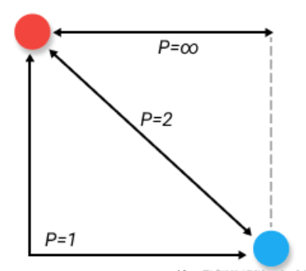

from scipy.spatial import distance
距离和范数#
在机器学习中我们会遇到各种各样的距离公式[1][2]。有数值向量的距离、布尔向量的距离和分布之间的距离等等。
下面将展开详细介绍：
曼哈顿距离#
曼哈顿距离（Manhattan Distance）是由十九世纪的赫尔曼·闵可夫斯基所创词汇，是种使用在几何度量空间的几何学用语，用以标明两个点在标准坐标系上的绝对轴距总和。曼哈顿距离的命名原因是从规划为方型建筑区块的城市（如曼哈顿）间，最短的行车路径而来（忽略曼哈顿的单向车道以及只存在于3、14大道的斜向车道）。任何往东三区块、往北六区块的的路径一定最少要走九区块，没有其他捷径。对于空间中的两个点 \((x_1, x_2, …, x_n)\) 和 \((y_1, y_2, …, y_n)\)，曼哈顿距离可以表示为：
如图红黄蓝三色距离等价。
曼哈顿街区 |
曼哈顿距离 |
|---|---|
曼哈顿距离又被称为出租车距离，是因为在像纽约曼哈顿区这样的地区有很多由横平竖直的街道所切成的街区（Block），出租车司机计算从一个位置到另一个位置的距离，通常直接用街区的两个坐标分别相减，再相加，这个结果就是他即将开车通过的街区数量，而完全没有必要用欧氏距离来求解——算起来超级麻烦还没有意义，毕竟谁也没办法从欧氏距离的直线上飞过去。
x = [5, 3, 9]
y = [0, 1, 6]
dis = distance.cityblock(x, y)
dis
10
欧氏距离（Euclidean distance）#
欧几里得（希腊文：Ευκλειδης ，前330—前275），古希腊数学家，被称为“几何之父”。他最著名的著作《几何原本》是欧洲数学的基础，在书中他提出五大公设。
欧几里得 |
欧氏距离 |
|---|---|
欧几里得距离（Euclidean distance）是一个用于衡量两个点之间的直线距离的度量方式。它是最常见和直观的距离定义。
对于二维平面上的两个点 \(A(x_1, y_1)\) 和 \(B(x_2, y_2)\)，欧几里得距离表示为：
这可以通过使用勾股定理来计算两点间的直线距离。
例如，如果有两个点 \(A(2, 3)\) 和 \(B(5, 7)\)，我们可以计算欧几里得距离如下：
因此，点 A 和点 B 之间的欧几里得距离为 5。
欧几里得距离不仅限于二维空间，在更高维度的空间中也适用。对于 n 维空间中的两个点 X \((x_1, x_2, …, x_n)\) 和 Y \((y_1, y_2, …, y_n)\)，欧几里得距离的计算方式类似，即：
x = [1, 0, 0]
y = [0, 1, 0]
dis = distance.euclidean(x, y)
print(dis)
1.4142135623730951
切比雪夫距离（Chebyshev distance）#
切比雪夫 |
棋盘 |
|---|---|
“当一个人来之前，田地是一片荒芜，零星的几棵庄稼也因为没有得到良好的照看而显得毫无生机。当他走的时候，留下的是肥沃的土壤、整齐的垄沟，还有一片生机勃勃的庄稼。那么这个人就值得我们去纪念和学习”[3]。切比雪夫(Pafnuty Chebyshev,1821—1894)，是俄罗斯数学家、力学家。证明了贝尔特兰公式，自然数列中素数分布的定理，大数定律的一般公式以及中心极限定理。他终身未娶，日常生活十分简朴，他的把全部积蓄都用来买书和制造机器。他最大的乐趣是与年轻人讨论数学问题。19世纪以前，俄国的数学是相当落后的，没有自己的数学家，没有大学，甚至没有一部象样的初等数学教科书。俄国数学主要是在切比雪夫的领导下，在19世纪末大体跟上了世界先进的潮流，某些领域的优势则一直保留到今日。
切比雪夫距离（Chebyshev distance），也称为棋盘距离或L∞距离，是一种用于衡量两个点之间的最大绝对差异的度量方式。之所以叫棋盘距离是因为两点直接最短路径的走法类似国际象棋中的国王的走法。国际象棋是一种广泛流行的棋盘游戏，以下是其主要规则：
棋盘：国际象棋棋盘是一个 \(8 \times 8\) 的方格网格，交替着黑色和白色方格。
棋子：每个玩家开始时有16个棋子，包括国王、皇后、城堡（或车）、骑士（或马）、主教、兵（或卒）。 棋子只能在方格上移动。
国王：可以在水平、垂直和对角线上移动一步。
对于二维平面上的两个点 \(A(x1, y1)\) 和 \(B(x2, y2)\)，切比雪夫距离表示为：
这意味着切比雪夫距离是两个点在水平和垂直方向上绝对差异的最大值。
对于 n 维空间中的两个点 \((x_1, x_2, …, x_n)\) 和 \((y_1, y_2, …, y_n)\)，切比雪夫距离的计算方式类似：
切比雪夫距离常用于度量样本之间的差异性或相似性，尤其适用于处理离散数据或在距离计算中考虑最大差异的情况。
x = [5, 3, 9]
y = [0, 1, 6]
dis = distance.chebyshev(x, y)
dis
5
闵可夫斯基距离（Minkowski distance）#
闵可夫斯基 |
闵可夫斯基距离 |
|---|---|
 |
赫尔曼·闵可夫斯基（Hermann Minkowski，1864－1909），出生于俄国，德国数学家，创立四维时空理论，曾经是著名物理学家爱因斯坦的老师。
闵可夫斯基距离（Minkowski distance）是一种度量两个点之间距离的一般化方法，可以同时考虑欧几里得距离和曼哈顿距离。
对于 n 维空间中的两个点 \((x_1, x_2, …, x_n)\) 和 \((y_1, y_2, …, y_n)\)，闵可夫斯基距离表示为：
其中，\(p\) 是一个正实数。当 \(p = 1\) 时，闵可夫斯基距离等同于曼哈顿距离；当 \(p = 2\) 时，闵可夫斯基距离等同于欧几里得距离；当 \(p = ∞\) 时，闵可夫斯基距离退化为切比雪夫距离。
通过调整 \(p\) 的值，我们可以在闵可夫斯基距离中加权不同维度上的差异，从而适应具体问题的需求。
x = [2, 0, 0]
y = [0, 1, 0]
dis = distance.minkowski(x, y, 2)
print(dis)
2.23606797749979
范数#
以上几个距离公式被称为”范数”，因为它们满足向量或矩阵的范数定义。
在数学中，范数是一种将向量或矩阵映射到非负实数的函数，并满足一些特定的性质。具体来说，一个范数必须满足以下三个条件：
非负性：对于任何向量或矩阵，它们的范数始终大于等于零。
齐次性：对于任何向量或矩阵和一个标量（实数或复数），乘以该标量后的范数等于原范数乘以该标量的绝对值。
三角不等式：对于任何两个向量或矩阵，其范数之和小于等于这两个向量或矩阵的范数的和。
这些性质使得范数成为一种衡量向量或矩阵大小、重要性以及相似性的度量方式。
以下是几种常见的范数及其公式：
L1范数（曼哈顿距离或绝对值范数）：
对于一个n维向量x，L1范数表示为： $\(|x|_1 = \sum_{i=1}^{n} |x_i|\)$
L2范数（欧几里得范数）：
对于一个n维向量x，L2范数表示为： $\(|x|_2 = \sqrt{\sum_{i=1}^{n} |x_i|^2}\)$
Lp范数（p范数）：
对于一个n维向量x，Lp范数表示为： $\(|x|_p = \left(\sum_{i=1}^{n} |x_i|^p\right)^{\frac{1}{p}}\)$
无穷范数（最大值范数）：
对于一个n维向量x，无穷范数表示为： $\(|x|_{\infty} = \max(|x_1|, |x_2|, …, |x_n|)\)$
矩阵Frobenius范数：
弗罗贝尼乌斯
对于一个m×n矩阵A，Frobenius范数表示为： $\(|A|_F = \sqrt{\sum_{i=1}^{m}\sum_{j=1}^{n} |a_{ij}|^2}\)$
L2,1范数（多任务学习的正则化项）：
对于一个m×n的系数矩阵 \(A\)，L2,1范数定义为各个任务之间的L2范数的和。其表达式为：
参考#
[1] [机器学习]常用距离定义与计算 https://zhuanlan.zhihu.com/p/101277851
[2] 机器学习中常用的9种距离 https://zhuanlan.zhihu.com/p/565008179
[3] 切比雪夫—–俄国的荣光 https://www.sohu.com/a/231493249_348129
[4] 国际象棋国王走棋方式 https://baijiahao.baidu.com/s?id=1662497191260390003&wfr=spider&for=pc